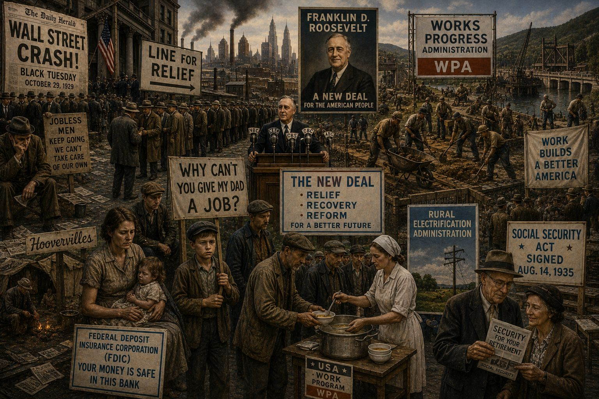
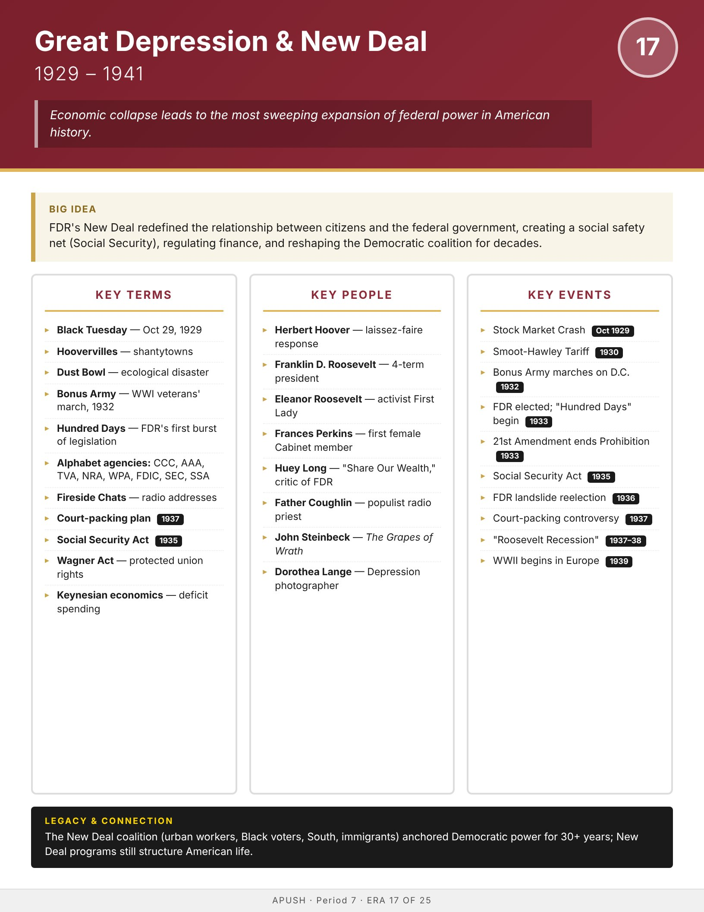

Era
Wise
AP History
AP United States History
Home
Course Sequence
Eras
Exam Prep
← Course Sequence

Era 17 of 25 · AP Period 7 · Lessons 39–41
Great Depression & New Deal
1929–1941
Open infographic full size
Print

← ERA 16
Roaring Twenties
ALL ERAS
Eras index
ERA 18 →
World War II